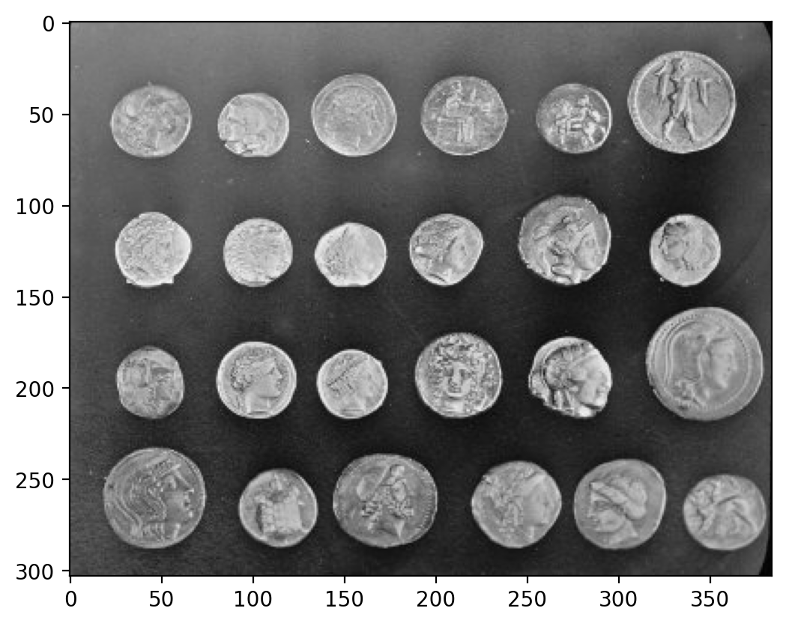
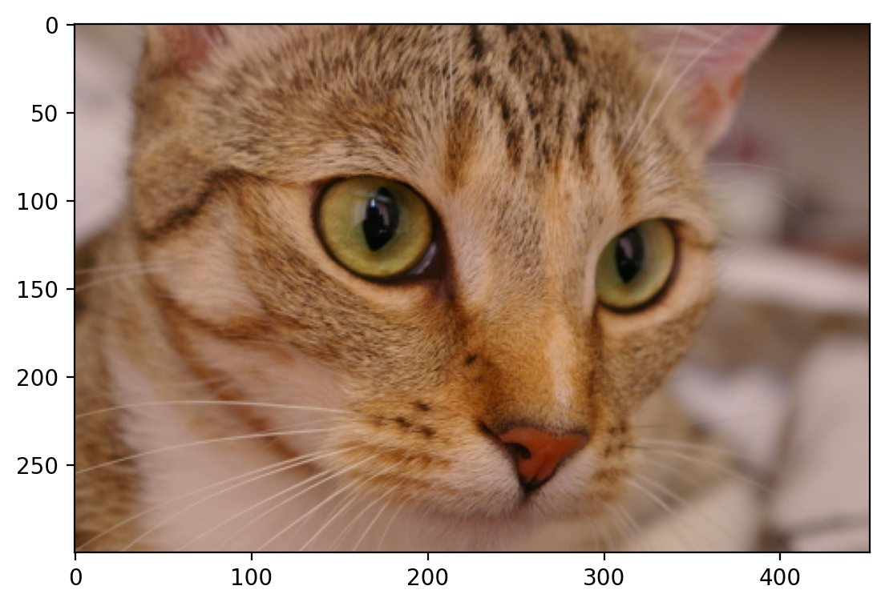
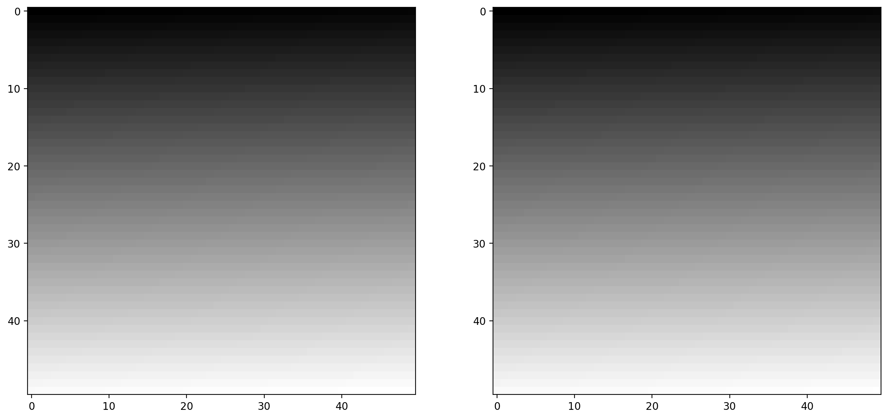
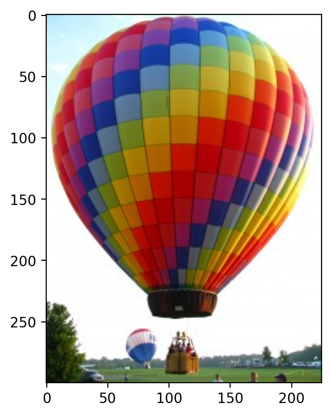
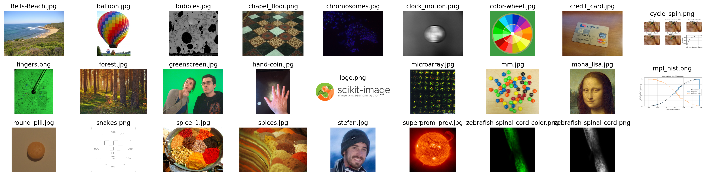

Images are numpy arrays#
Images are represented in scikit-image using standard numpy arrays. This allows maximum inter-operability with other libraries in the scientific Python ecosystem, such as matplotlib and scipy.
Let’s see how to build a grayscale image as a 2D array:
import numpy as np
from matplotlib import pyplot as plt
random_image = np.random.random([500, 500])
plt.imshow(random_image, cmap='gray')
plt.colorbar();
{kind=link}
The same holds for “real-world” images:
from skimage import data
coins = data.coins()
print('Type:', type(coins))
print('dtype:', coins.dtype)
print('shape:', coins.shape)
plt.imshow(coins, cmap='gray');
Type: <class 'numpy.ndarray'>
dtype: uint8
shape: (303, 384)
{kind=link}

A color image is a 3D array, where the last dimension has size 3 and represents the red, green, and blue channels:
cat = data.chelsea()
print("Shape:", cat.shape)
print("Values min/max:", cat.min(), cat.max())
plt.imshow(cat);
Shape: (300, 451, 3)
Values min/max: 0 231
{kind=link}

These are just NumPy arrays. E.g., we can make a red square by using standard array slicing and manipulation:
cat[10:110, 10:110, :] = [255, 0, 0] # [red, green, blue]
plt.imshow(cat);
{kind=link}
Images can also include transparent regions by adding a 4th dimension, called an alpha layer.
Other shapes, and their meanings#
Image type |
Coordinates |
|---|---|
2D grayscale |
(row, column) |
2D multichannel |
(row, column, channel) |
3D grayscale (or volumetric) |
(plane, row, column) |
3D multichannel |
(plane, row, column, channel) |
Displaying images using matplotlib#
from skimage import data
img0 = data.chelsea()
img1 = data.rocket()
import matplotlib.pyplot as plt
f, (ax0, ax1) = plt.subplots(1, 2, figsize=(20, 10))
ax0.imshow(img0)
ax0.set_title('Cat', fontsize=18)
ax0.axis('off')
ax1.imshow(img1)
ax1.set_title('Rocket', fontsize=18)
ax1.set_xlabel(r'Launching position $\alpha=320$')
ax1.vlines([202, 300], 0, img1.shape[0], colors='magenta', linewidth=3, label='Side tower position')
ax1.plot([168, 190, 200], [400, 200, 300], color='white', linestyle='--', label='Side angle')
ax1.legend();
{kind=link}
For more on plotting, see the Matplotlib documentation and pyplot API.
Data types and image values#
In literature, one finds different conventions for representing image values:
0 - 255 where 0 is black, 255 is white
0 - 1 where 0 is black, 1 is white
scikit-image supports both conventions–the choice is determined by the
data-type of the array.
E.g., here, I generate two valid images:
linear0 = np.linspace(0, 1, 2500).reshape((50, 50))
linear1 = np.linspace(0, 255, 2500).reshape((50, 50)).astype(np.uint8)
print("Linear0:", linear0.dtype, linear0.min(), linear0.max())
print("Linear1:", linear1.dtype, linear1.min(), linear1.max())
fig, (ax0, ax1) = plt.subplots(1, 2, figsize=(15, 15))
ax0.imshow(linear0, cmap='gray')
ax1.imshow(linear1, cmap='gray');
Linear0: float64 0.0 1.0
Linear1: uint8 0 255
{kind=link}

The library is designed in such a way that any data-type is allowed as input, as long as the range is correct (0-1 for floating point images, 0-255 for unsigned bytes, 0-65535 for unsigned 16-bit integers).
You can convert images between different representations by using img_as_float, img_as_ubyte, etc.:
from skimage import img_as_float, img_as_ubyte
image = data.chelsea()
image_ubyte = img_as_ubyte(image)
image_float = img_as_float(image)
print("type, min, max:", image_ubyte.dtype, image_ubyte.min(), image_ubyte.max())
print("type, min, max:", image_float.dtype, image_float.min(), image_float.max())
print()
print("231/255 =", 231/255.)
type, min, max: uint8 0 231
type, min, max: float64 0.0 0.9058823529411765
231/255 = 0.9058823529411765
Your code would then typically look like this:
def my_function(any_image):
float_image = img_as_float(any_image)
# Proceed, knowing image is in [0, 1]
We recommend using the floating point representation, given that
scikit-image mostly uses that format internally.
Image I/O#
Mostly, we won’t be using input images from the scikit-image example data sets. Those images are typically stored in JPEG or PNG format. Since scikit-image operates on NumPy arrays, any image reader library that provides arrays will do. Options include imageio, matplotlib, pillow, etc.
scikit-image conveniently wraps many of these in the io submodule, and will use whichever of the libraries mentioned above are installed:
from skimage import io
image = io.imread('../images/balloon.jpg')
print(type(image))
print(image.dtype)
print(image.shape)
print(image.min(), image.max())
plt.imshow(image);
<class 'numpy.ndarray'>
uint8
(300, 225, 3)
0 255
{kind=link}

We also have the ability to load multiple images, or multi-layer TIFF images:
ic = io.ImageCollection('../images/*.png:../images/*.jpg')
print('Type:', type(ic))
ic.files
Type: <class 'skimage.io.collection.ImageCollection'>
['../images/Bells-Beach.jpg',
'../images/balloon.jpg',
'../images/bubbles.jpg',
'../images/chapel_floor.png',
'../images/chromosomes.jpg',
'../images/clock_motion.png',
'../images/color-wheel.jpg',
'../images/credit_card.jpg',
'../images/cycle_spin.png',
'../images/fingers.png',
'../images/forest.jpg',
'../images/greenscreen.jpg',
'../images/hand-coin.jpg',
'../images/logo.png',
'../images/microarray.jpg',
'../images/mm.jpg',
'../images/mona_lisa.jpg',
'../images/mpl_hist.png',
'../images/round_pill.jpg',
'../images/snakes.png',
'../images/spice_1.jpg',
'../images/spices.jpg',
'../images/stefan.jpg',
'../images/superprom_prev.jpg',
'../images/zebrafish-spinal-cord-color.png',
'../images/zebrafish-spinal-cord.png']
import os
f, axes = plt.subplots(nrows=3, ncols=len(ic) // 3 + 1, figsize=(20, 5))
# subplots returns the figure and an array of axes
# we use `axes.ravel()` to turn these into a list
axes = axes.ravel()
for ax in axes:
ax.axis('off')
for i, image in enumerate(ic):
axes[i].imshow(image, cmap='gray')
axes[i].set_title(os.path.basename(ic.files[i]))
plt.tight_layout()
/Users/mb312/.virtualenvs/test/lib/python3.12/site-packages/skimage/io/collection.py:316: FutureWarning: The plugin infrastructure in `skimage.io` is deprecated since version 0.25 and will be removed in 0.27 (or later). To avoid this warning, please do not pass additional keyword arguments for plugins (`**plugin_args`). Instead, use `imageio` or other I/O packages directly. See also `skimage.io.imread`.
self.data[idx] = self.load_func(fname, **kwargs)
/Users/mb312/.virtualenvs/test/lib/python3.12/site-packages/skimage/io/collection.py:316: FutureWarning: The plugin infrastructure in `skimage.io` is deprecated since version 0.25 and will be removed in 0.27 (or later). To avoid this warning, please do not pass additional keyword arguments for plugins (`**plugin_args`). Instead, use `imageio` or other I/O packages directly. See also `skimage.io.imread`.
self.data[idx] = self.load_func(fname, **kwargs)
/Users/mb312/.virtualenvs/test/lib/python3.12/site-packages/skimage/io/collection.py:316: FutureWarning: The plugin infrastructure in `skimage.io` is deprecated since version 0.25 and will be removed in 0.27 (or later). To avoid this warning, please do not pass additional keyword arguments for plugins (`**plugin_args`). Instead, use `imageio` or other I/O packages directly. See also `skimage.io.imread`.
self.data[idx] = self.load_func(fname, **kwargs)
/Users/mb312/.virtualenvs/test/lib/python3.12/site-packages/skimage/io/collection.py:316: FutureWarning: The plugin infrastructure in `skimage.io` is deprecated since version 0.25 and will be removed in 0.27 (or later). To avoid this warning, please do not pass additional keyword arguments for plugins (`**plugin_args`). Instead, use `imageio` or other I/O packages directly. See also `skimage.io.imread`.
self.data[idx] = self.load_func(fname, **kwargs)
/Users/mb312/.virtualenvs/test/lib/python3.12/site-packages/skimage/io/collection.py:316: FutureWarning: The plugin infrastructure in `skimage.io` is deprecated since version 0.25 and will be removed in 0.27 (or later). To avoid this warning, please do not pass additional keyword arguments for plugins (`**plugin_args`). Instead, use `imageio` or other I/O packages directly. See also `skimage.io.imread`.
self.data[idx] = self.load_func(fname, **kwargs)
/Users/mb312/.virtualenvs/test/lib/python3.12/site-packages/skimage/io/collection.py:316: FutureWarning: The plugin infrastructure in `skimage.io` is deprecated since version 0.25 and will be removed in 0.27 (or later). To avoid this warning, please do not pass additional keyword arguments for plugins (`**plugin_args`). Instead, use `imageio` or other I/O packages directly. See also `skimage.io.imread`.
self.data[idx] = self.load_func(fname, **kwargs)
/Users/mb312/.virtualenvs/test/lib/python3.12/site-packages/skimage/io/collection.py:316: FutureWarning: The plugin infrastructure in `skimage.io` is deprecated since version 0.25 and will be removed in 0.27 (or later). To avoid this warning, please do not pass additional keyword arguments for plugins (`**plugin_args`). Instead, use `imageio` or other I/O packages directly. See also `skimage.io.imread`.
self.data[idx] = self.load_func(fname, **kwargs)
/Users/mb312/.virtualenvs/test/lib/python3.12/site-packages/skimage/io/collection.py:316: FutureWarning: The plugin infrastructure in `skimage.io` is deprecated since version 0.25 and will be removed in 0.27 (or later). To avoid this warning, please do not pass additional keyword arguments for plugins (`**plugin_args`). Instead, use `imageio` or other I/O packages directly. See also `skimage.io.imread`.
self.data[idx] = self.load_func(fname, **kwargs)
/Users/mb312/.virtualenvs/test/lib/python3.12/site-packages/skimage/io/collection.py:316: FutureWarning: The plugin infrastructure in `skimage.io` is deprecated since version 0.25 and will be removed in 0.27 (or later). To avoid this warning, please do not pass additional keyword arguments for plugins (`**plugin_args`). Instead, use `imageio` or other I/O packages directly. See also `skimage.io.imread`.
self.data[idx] = self.load_func(fname, **kwargs)
/Users/mb312/.virtualenvs/test/lib/python3.12/site-packages/skimage/io/collection.py:316: FutureWarning: The plugin infrastructure in `skimage.io` is deprecated since version 0.25 and will be removed in 0.27 (or later). To avoid this warning, please do not pass additional keyword arguments for plugins (`**plugin_args`). Instead, use `imageio` or other I/O packages directly. See also `skimage.io.imread`.
self.data[idx] = self.load_func(fname, **kwargs)
/Users/mb312/.virtualenvs/test/lib/python3.12/site-packages/skimage/io/collection.py:316: FutureWarning: The plugin infrastructure in `skimage.io` is deprecated since version 0.25 and will be removed in 0.27 (or later). To avoid this warning, please do not pass additional keyword arguments for plugins (`**plugin_args`). Instead, use `imageio` or other I/O packages directly. See also `skimage.io.imread`.
self.data[idx] = self.load_func(fname, **kwargs)
/Users/mb312/.virtualenvs/test/lib/python3.12/site-packages/skimage/io/collection.py:316: FutureWarning: The plugin infrastructure in `skimage.io` is deprecated since version 0.25 and will be removed in 0.27 (or later). To avoid this warning, please do not pass additional keyword arguments for plugins (`**plugin_args`). Instead, use `imageio` or other I/O packages directly. See also `skimage.io.imread`.
self.data[idx] = self.load_func(fname, **kwargs)
/Users/mb312/.virtualenvs/test/lib/python3.12/site-packages/skimage/io/collection.py:316: FutureWarning: The plugin infrastructure in `skimage.io` is deprecated since version 0.25 and will be removed in 0.27 (or later). To avoid this warning, please do not pass additional keyword arguments for plugins (`**plugin_args`). Instead, use `imageio` or other I/O packages directly. See also `skimage.io.imread`.
self.data[idx] = self.load_func(fname, **kwargs)
/Users/mb312/.virtualenvs/test/lib/python3.12/site-packages/skimage/io/collection.py:316: FutureWarning: The plugin infrastructure in `skimage.io` is deprecated since version 0.25 and will be removed in 0.27 (or later). To avoid this warning, please do not pass additional keyword arguments for plugins (`**plugin_args`). Instead, use `imageio` or other I/O packages directly. See also `skimage.io.imread`.
self.data[idx] = self.load_func(fname, **kwargs)
/Users/mb312/.virtualenvs/test/lib/python3.12/site-packages/skimage/io/collection.py:316: FutureWarning: The plugin infrastructure in `skimage.io` is deprecated since version 0.25 and will be removed in 0.27 (or later). To avoid this warning, please do not pass additional keyword arguments for plugins (`**plugin_args`). Instead, use `imageio` or other I/O packages directly. See also `skimage.io.imread`.
self.data[idx] = self.load_func(fname, **kwargs)
/Users/mb312/.virtualenvs/test/lib/python3.12/site-packages/skimage/io/collection.py:316: FutureWarning: The plugin infrastructure in `skimage.io` is deprecated since version 0.25 and will be removed in 0.27 (or later). To avoid this warning, please do not pass additional keyword arguments for plugins (`**plugin_args`). Instead, use `imageio` or other I/O packages directly. See also `skimage.io.imread`.
self.data[idx] = self.load_func(fname, **kwargs)
/Users/mb312/.virtualenvs/test/lib/python3.12/site-packages/skimage/io/collection.py:316: FutureWarning: The plugin infrastructure in `skimage.io` is deprecated since version 0.25 and will be removed in 0.27 (or later). To avoid this warning, please do not pass additional keyword arguments for plugins (`**plugin_args`). Instead, use `imageio` or other I/O packages directly. See also `skimage.io.imread`.
self.data[idx] = self.load_func(fname, **kwargs)
/Users/mb312/.virtualenvs/test/lib/python3.12/site-packages/skimage/io/collection.py:316: FutureWarning: The plugin infrastructure in `skimage.io` is deprecated since version 0.25 and will be removed in 0.27 (or later). To avoid this warning, please do not pass additional keyword arguments for plugins (`**plugin_args`). Instead, use `imageio` or other I/O packages directly. See also `skimage.io.imread`.
self.data[idx] = self.load_func(fname, **kwargs)
/Users/mb312/.virtualenvs/test/lib/python3.12/site-packages/skimage/io/collection.py:316: FutureWarning: The plugin infrastructure in `skimage.io` is deprecated since version 0.25 and will be removed in 0.27 (or later). To avoid this warning, please do not pass additional keyword arguments for plugins (`**plugin_args`). Instead, use `imageio` or other I/O packages directly. See also `skimage.io.imread`.
self.data[idx] = self.load_func(fname, **kwargs)
/Users/mb312/.virtualenvs/test/lib/python3.12/site-packages/skimage/io/collection.py:316: FutureWarning: The plugin infrastructure in `skimage.io` is deprecated since version 0.25 and will be removed in 0.27 (or later). To avoid this warning, please do not pass additional keyword arguments for plugins (`**plugin_args`). Instead, use `imageio` or other I/O packages directly. See also `skimage.io.imread`.
self.data[idx] = self.load_func(fname, **kwargs)
/Users/mb312/.virtualenvs/test/lib/python3.12/site-packages/skimage/io/collection.py:316: FutureWarning: The plugin infrastructure in `skimage.io` is deprecated since version 0.25 and will be removed in 0.27 (or later). To avoid this warning, please do not pass additional keyword arguments for plugins (`**plugin_args`). Instead, use `imageio` or other I/O packages directly. See also `skimage.io.imread`.
self.data[idx] = self.load_func(fname, **kwargs)
/Users/mb312/.virtualenvs/test/lib/python3.12/site-packages/skimage/io/collection.py:316: FutureWarning: The plugin infrastructure in `skimage.io` is deprecated since version 0.25 and will be removed in 0.27 (or later). To avoid this warning, please do not pass additional keyword arguments for plugins (`**plugin_args`). Instead, use `imageio` or other I/O packages directly. See also `skimage.io.imread`.
self.data[idx] = self.load_func(fname, **kwargs)
/Users/mb312/.virtualenvs/test/lib/python3.12/site-packages/skimage/io/collection.py:316: FutureWarning: The plugin infrastructure in `skimage.io` is deprecated since version 0.25 and will be removed in 0.27 (or later). To avoid this warning, please do not pass additional keyword arguments for plugins (`**plugin_args`). Instead, use `imageio` or other I/O packages directly. See also `skimage.io.imread`.
self.data[idx] = self.load_func(fname, **kwargs)
/Users/mb312/.virtualenvs/test/lib/python3.12/site-packages/skimage/io/collection.py:316: FutureWarning: The plugin infrastructure in `skimage.io` is deprecated since version 0.25 and will be removed in 0.27 (or later). To avoid this warning, please do not pass additional keyword arguments for plugins (`**plugin_args`). Instead, use `imageio` or other I/O packages directly. See also `skimage.io.imread`.
self.data[idx] = self.load_func(fname, **kwargs)
/Users/mb312/.virtualenvs/test/lib/python3.12/site-packages/skimage/io/collection.py:316: FutureWarning: The plugin infrastructure in `skimage.io` is deprecated since version 0.25 and will be removed in 0.27 (or later). To avoid this warning, please do not pass additional keyword arguments for plugins (`**plugin_args`). Instead, use `imageio` or other I/O packages directly. See also `skimage.io.imread`.
self.data[idx] = self.load_func(fname, **kwargs)
/Users/mb312/.virtualenvs/test/lib/python3.12/site-packages/skimage/io/collection.py:316: FutureWarning: The plugin infrastructure in `skimage.io` is deprecated since version 0.25 and will be removed in 0.27 (or later). To avoid this warning, please do not pass additional keyword arguments for plugins (`**plugin_args`). Instead, use `imageio` or other I/O packages directly. See also `skimage.io.imread`.
self.data[idx] = self.load_func(fname, **kwargs)
{kind=link}

Aside: enumerate#
enumerate gives us each element in a container, along with its position.
animals = ['cat', 'dog', 'leopard']
for i, animal in enumerate(animals):
print('The animal in position {} is {}'.format(i, animal))
The animal in position 0 is cat
The animal in position 1 is dog
The animal in position 2 is leopard
Exercise: draw the letter H#
Define a function that takes as input an RGB image and a pair of coordinates (row, column), and returns a copy with a green letter H overlaid at those coordinates. The coordinates point to the top-left corner of the H.
The arms and strut of the H should have a width of 3 pixels, and the H itself should have a height of 24 pixels and width of 20 pixels.
Start with the following template:
def draw_H(image, coords, color=(0, 255, 0)):
out = image.copy()
...
return out
Test your function like so:
cat = data.chelsea()
cat_H = draw_H(cat, (50, -50))
plt.imshow(cat_H);
Exercise: visualizing RGB channels#
Display the different color channels of the image along (each as a gray-scale image). Start with the following template:
# --- read in the image ---
image = plt.imread('../images/Bells-Beach.jpg')
# --- assign each color channel to a different variable ---
r = ... # FIXME: grab channel from image...
g = ... # FIXME
b = ... # FIXME
# --- display the image and r, g, b channels ---
f, axes = plt.subplots(1, 4, figsize=(16, 5))
for ax in axes:
ax.axis('off')
(ax_r, ax_g, ax_b, ax_color) = axes
ax_r.imshow(r, cmap='gray')
ax_r.set_title('red channel')
ax_g.imshow(g, cmap='gray')
ax_g.set_title('green channel')
ax_b.imshow(b, cmap='gray')
ax_b.set_title('blue channel')
# --- Here, we stack the R, G, and B layers again
# to form a color image ---
ax_color.imshow(np.stack([r, g, b], axis=2))
ax_color.set_title('all channels');
Now, take a look at the following R, G, and B channels. How would their combination look? (Write some code to confirm your intuition.)
from skimage import draw
red = np.zeros((300, 300))
green = np.zeros((300, 300))
blue = np.zeros((300, 300))
r, c = draw.disk(center=(100, 100), radius=100)
red[r, c] = 1
r, c = draw.disk(center=(100, 200), radius=100)
green[r, c] = 1
r, c = draw.disk(center=(200, 150), radius=100)
blue[r, c] = 1
f, axes = plt.subplots(1, 3)
for (ax, channel) in zip(axes, [red, green, blue]):
ax.imshow(channel, cmap='gray')
ax.axis('off')
{kind=link}
Exercise: Convert to grayscale (“black and white”)#
The relative luminance of an image is the intensity of light coming from each point. Different colors contribute differently to the luminance: it’s very hard to have a bright, pure blue, for example. So, starting from an RGB image, the luminance is given by:
Use Python 3.5’s matrix multiplication, @, to convert an RGB image to a grayscale luminance image according to the formula above.
Compare your results to that obtained with skimage.color.rgb2gray.
Change the coefficients to 1/3 (i.e., take the mean of the red, green, and blue channels, to see how that approach compares with rgb2gray).
from skimage import color, img_as_float
image = img_as_float(io.imread('../images/balloon.jpg'))
gray = color.rgb2gray(image)
my_gray = ... # FIXME
# --- display the results ---
f, (ax0, ax1) = plt.subplots(1, 2, figsize=(10, 6))
ax0.imshow(gray, cmap='gray')
ax0.set_title('skimage.color.rgb2gray')
ax1.imshow(my_gray, cmap='gray')
ax1.set_title('my rgb2gray')